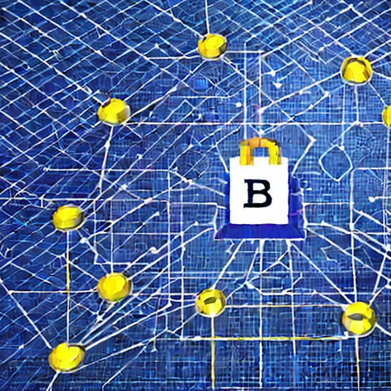

Revolutionizing Warranties with Blockchain Technology
BitWarranty is at the forefront of integrating blockchain technology to transform the warranty industry. With blockchain, we ensure that every warranty transaction is secured, transparent, and immutable. This innovative approach helps build trust between consumers and manufacturers, ensuring all terms and conditions are upheld without the risk of fraud or misinterpretation. By leveraging the decentralized nature of blockchain, BitWarranty offers unparalleled security and efficiency in managing warranties, making the process hassle-free for both customers and businesses. Join us in revolutionizing the way warranties are handled, creating a future where warranty processes are seamless and reliable.
About Us
At BitWarranty, we are driven by the mission to bridge the gap between traditional warranties and the digital revolution. We understand the frustrations that can arise from complex and often unreliable warranty processes. Our team of experts is committed to delivering a seamless experience by providing a platform that is not only robust and trustworthy but also easy to use. We aim to empower consumers with control over their warranties, ensuring they can access and manage them without any hurdles. Our innovative solutions are designed to cater to the evolving needs of today's tech-savvy customers. By focusing on security, transparency, and user-friendliness, we are redefining the warranty landscape.
The Problem
Traditional warranty processes are fraught with inefficiencies and lack of transparency. Customers often face numerous challenges, such as lost documentation, unclear terms, and lengthy claim procedures. These issues can lead to frustration and mistrust between consumers and warranty providers. Additionally, the risk of fraud and tampering with warranty details further complicates the situation. BitWarranty addresses these pain points by providing a secure and transparent platform that ensures all warranty-related information is tamper-proof and easily accessible. Our solution mitigates common issues associated with traditional warranties, offering a reliable alternative powered by blockchain technology.

Our Solution
BitWarranty harnesses the power of blockchain to revolutionize the warranty landscape. Our solution offers a decentralized and immutable ledger where all warranty transactions are recorded and verified. This ensures that the terms and conditions of warranties are always transparent and secure. Customers can easily register and manage their warranties through our user-friendly app, eliminating the need for cumbersome paperwork. Furthermore, businesses benefit from reduced fraud and enhanced customer satisfaction, as our platform provides a reliable and efficient way to handle warranty claims and verifications. Our solution is designed to streamline the entire process, making it simpler and more efficient for everyone involved.
